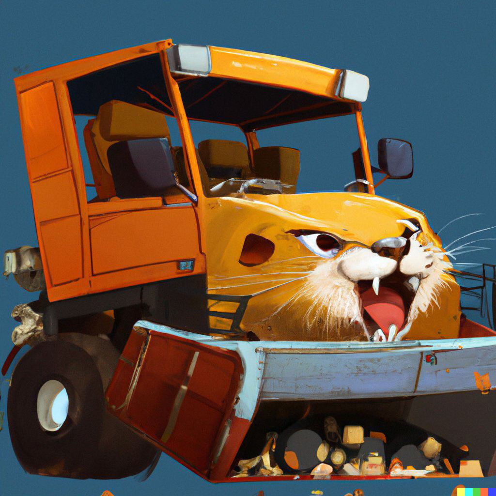
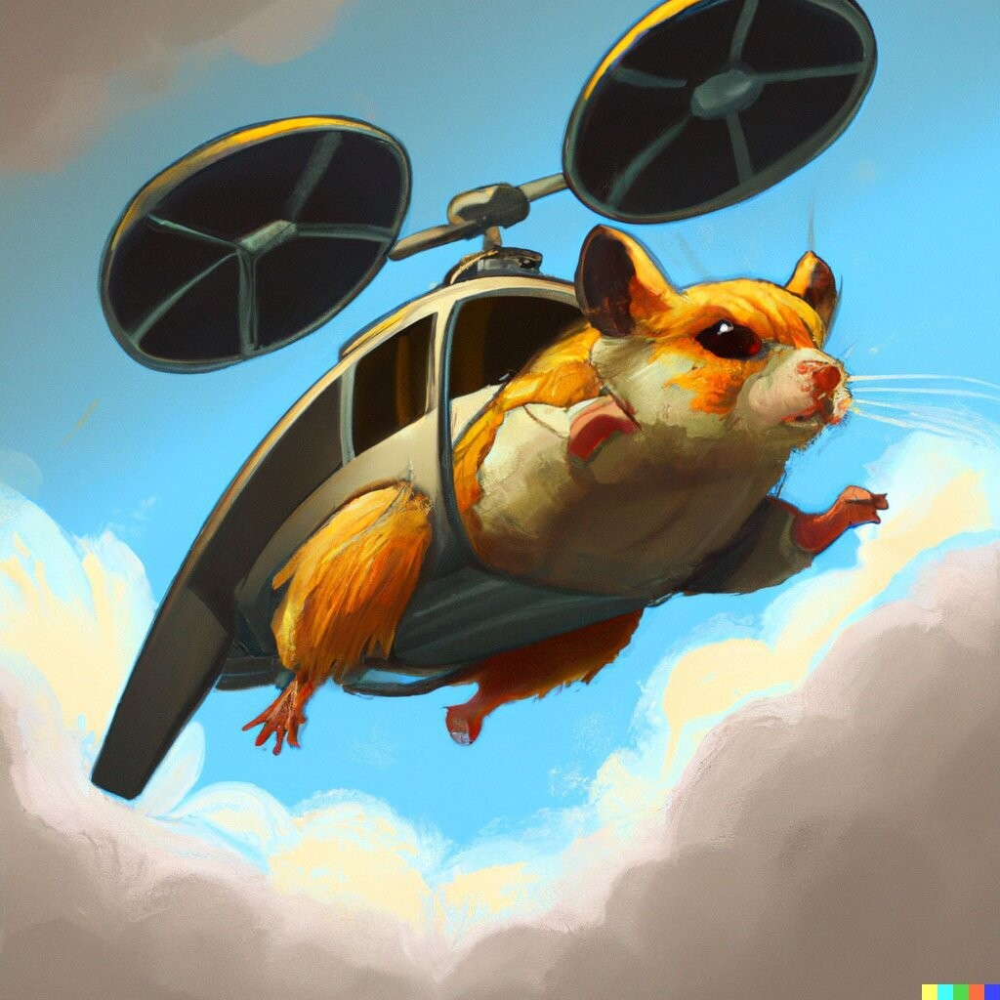
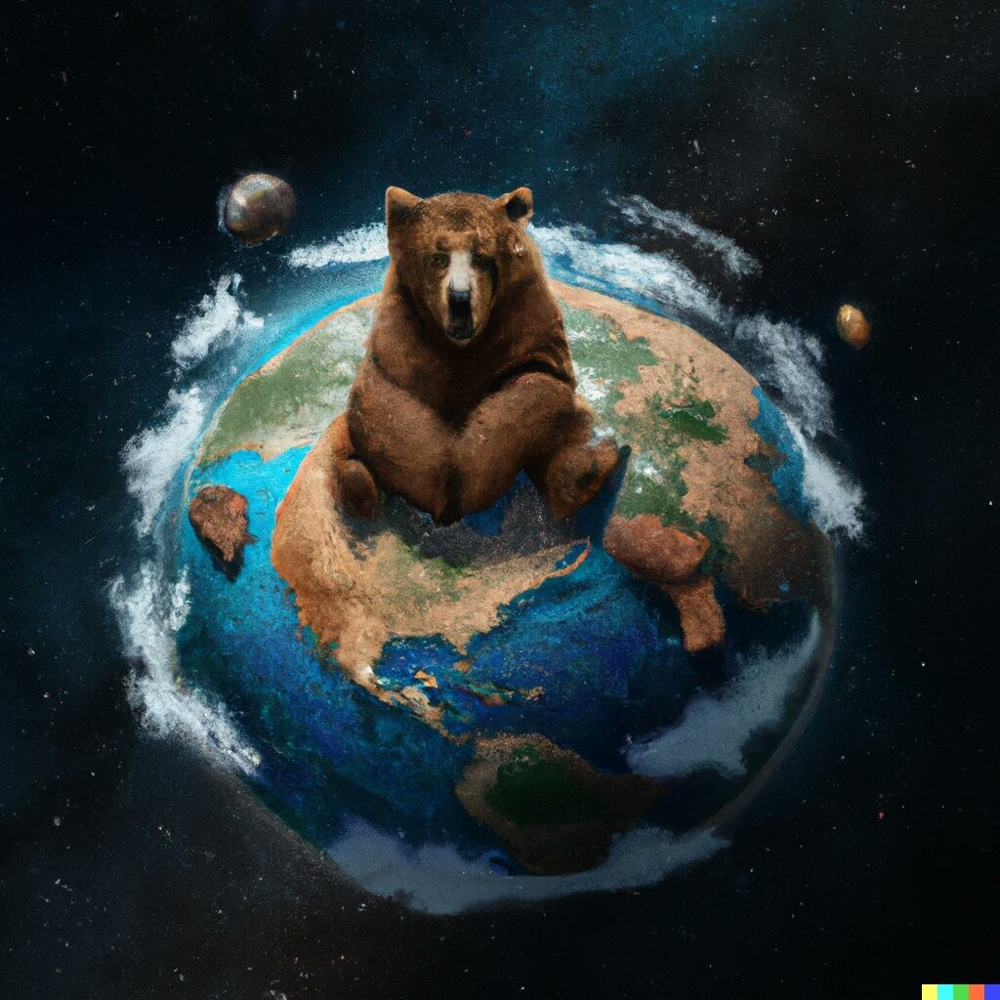
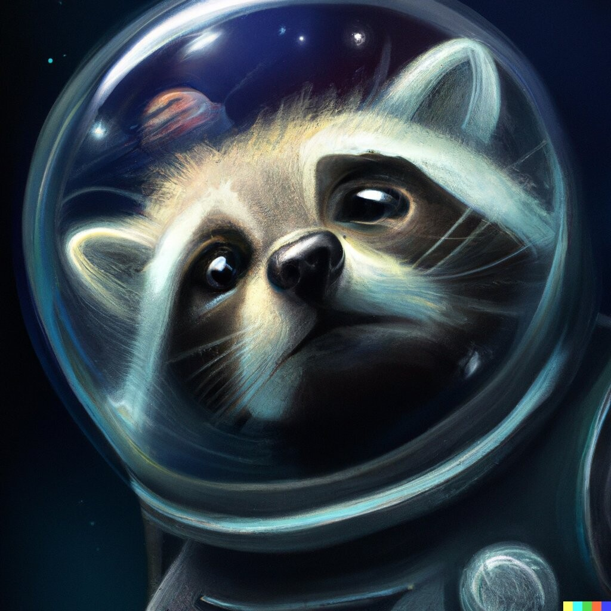
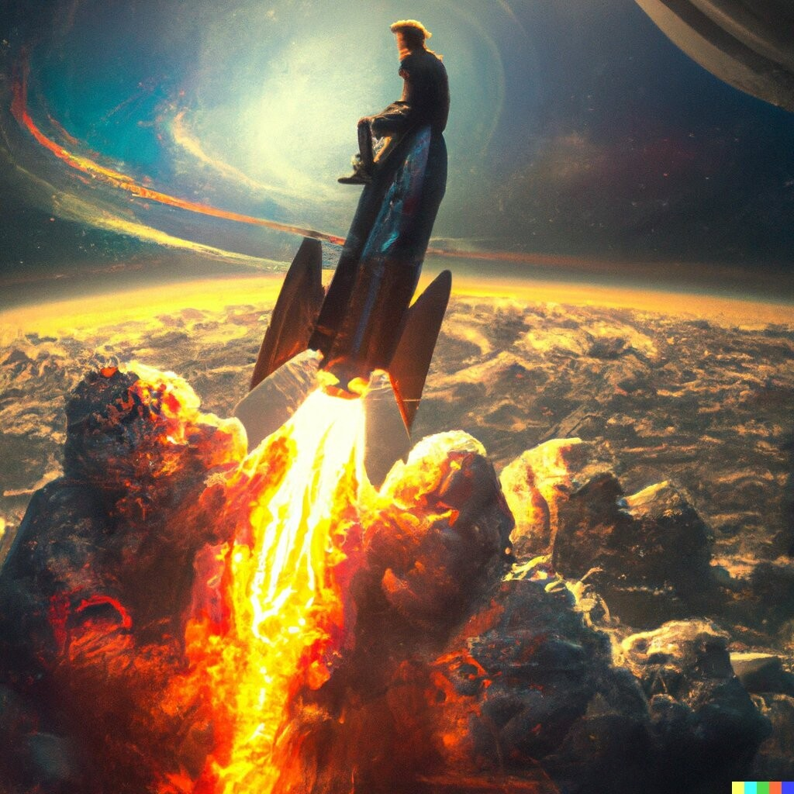
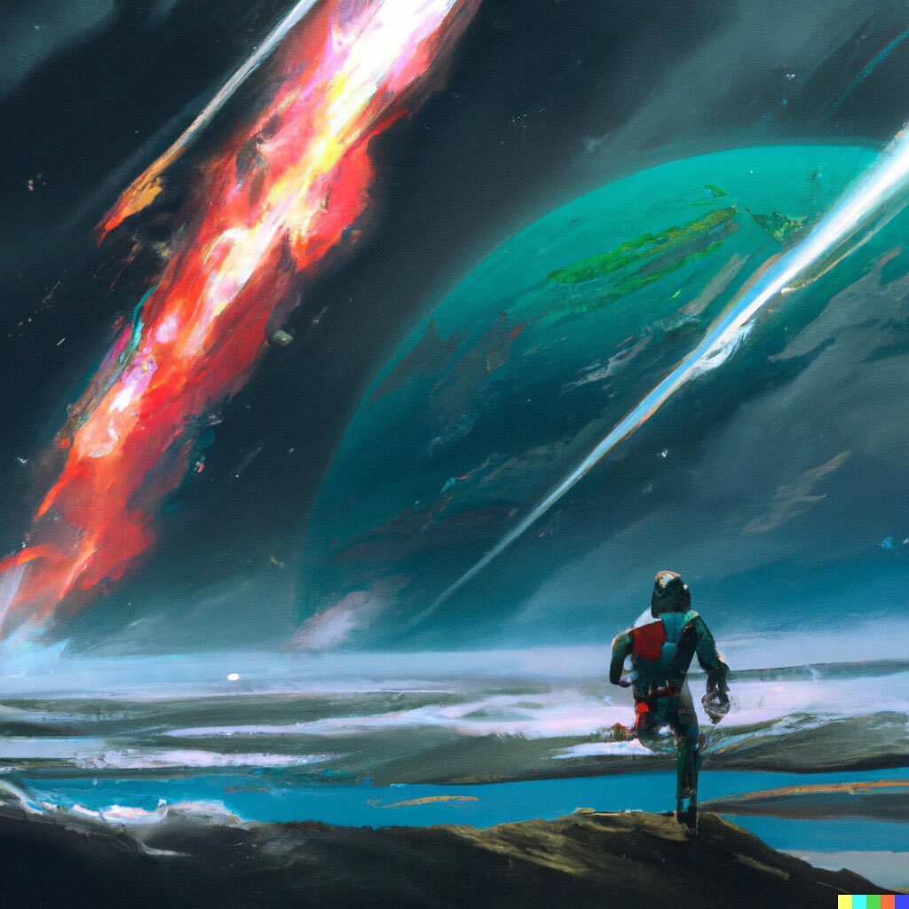
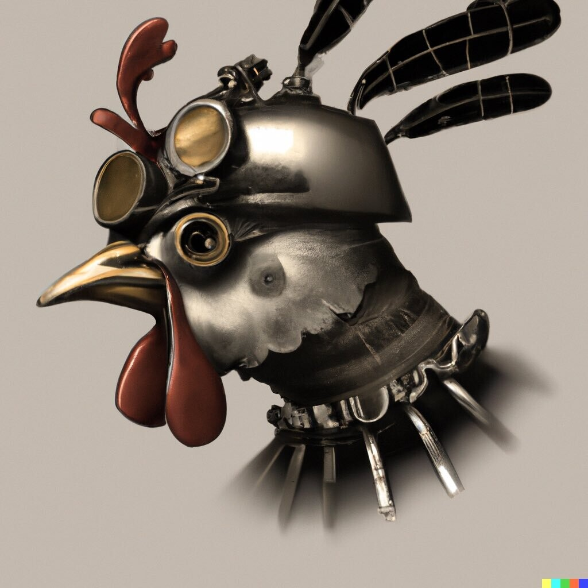
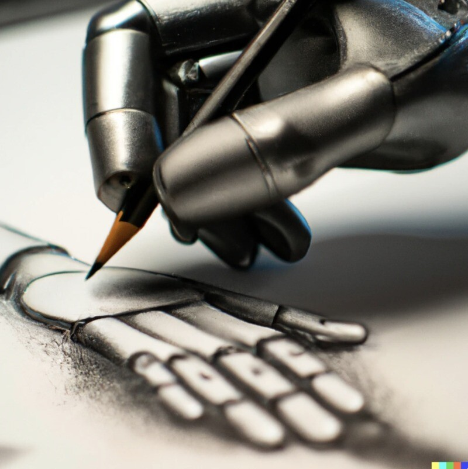
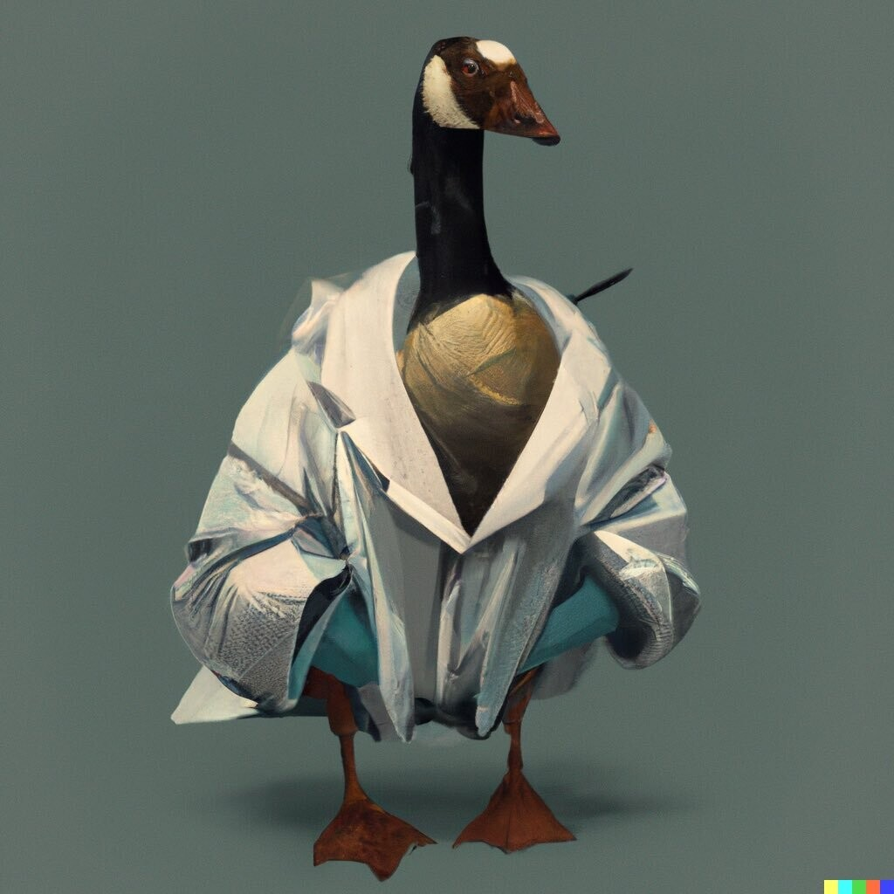
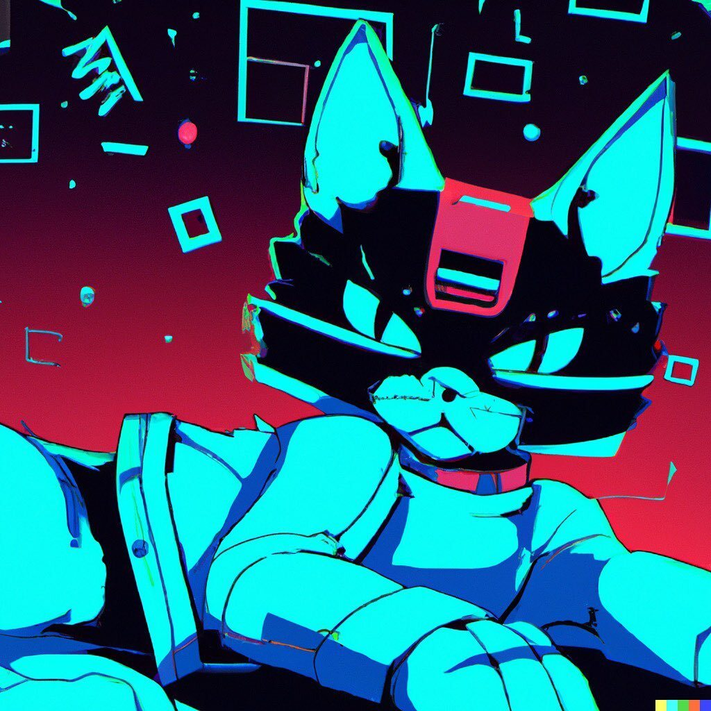

— разновидность машинного обучения, при котором программа работает по принципу человеческого мозга.
DALL-E способна генерировать изображения в самых разных визуализациях — от фотореализма до картин и эмодзи, передвигая и видоизменяя объекты на своих изображениях.
Одна из способностей, отмеченная его создателями, заключалась в правильном размещении элементов дизайна в новых композициях без явных указаний: «Например, когда его попросили нарисовать Редис Дайкон, сморкающийся, потягивающий латте или катающийся на одноколёсном велосипеде, DALL·E часто рисует платок, руки и ноги в правдоподобных местах».
DALL-E характеризуется как устойчивая и крайне надёжная нейронная сеть для создания изображений различного плана. Сэм Шхед в репортаже для CNBC назвал изображения «интересными» и процитировал Нила Лоуренса, профессора машинного обучения Кембриджского университета, который назвал это «вдохновляющей демонстрацией способности этих моделей хранить информацию о нашем мире и обобщать его способами, которые для людей естественны».
Итак, посмотрим на что способна эта нейросеть:
Зададим необычные даже для человека запросы про хомяков: "Хомяк-грузовик-химера" и "Хомяк-вертолёт":
 
Удивительно, да? Интересно, что происходит такое необычное совмещение образов. Но можно заметить, что теряются детали, например, задняя ось грузовика или превращение винта вертолёта в две турбины, а также отсутствие заднего винта.
Что ж, посмотрим ещё результаты запросов:
"Медведи захватывают планету" и "Енот-астронавт, у которого космос отражается на стекле его шлема, мечтает о звёздах"
 
"Человек отправляется в космос верхом на ракете" и "Космонавт бежит к планете в космосе"
 
"Стимпанковская курица" и "Робот рисует"
 
"Важный гусь" и "Cyberpunk cat, 90s Japan anime style"
 